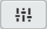

{kind=link}
{kind=link}
{kind=link}

7
The reset and checkout functions are normally available when looking at the commit history of a project; however the functions must be enabled in the Bracket-Git settings.
Open the lab-01-website project in Brackets (this is the project we developed in section 6) and activate the Git pane by clicking its icon in the right side bar ().
To access the Brackets-Git settings, either click the settings button in the Git pane , or select . They open the following settings dialogue box:
Figure 7.1 Bracket-Git settings dialogue box
The thing we need is at the bottom. Make sure is active (ticked). These advanced features are the very reset and checkout functions we’re looking for. That’s it, click and if you made any changes it will prompt to restart Brackets. Let it.
To see if it’s worked, click the commit history button in the Git pane and then click on any commit line to open the commit information screen (see § 6.3.3 for detailed instruction). You should have something like this:
Figure 7.2 Bracket-Git reset and checkout buttons
The buttons are at the top (highlighted in Figure 7.2).
If you were to untick the , the buttons would disappear.
One other thing I’ve done here is change how the time and date of commits are displayed, in the previous section they were shown as relative dates (i.e. commit made 3 hours ago). I’m going to change this and use absolute times and dates for clarity (if I use the relative ones, it keeps changing to mark the lapse of time).
I’m going to use the standard iso 8601 date format (this is what engineers always use†1).
YYYY-MM-DD HH:mm:ss
To change how the date and time are displayed; reopen the same settings page (Figure 7.3):
Figure 7.3 Bracket-Git Commit history date format
Change the to . Enter the format you want in the box (if you click the blue , it will open a web page showing all the possible formats).
You can see the format I’ve used (the uppercase HH for hours shows it as a two digit 24 hour clock value).
| †1 | Except in pharmaceutical environments, here we use the format DD Mmm YYYY (e.g. 12 Feb 2018), we write the first three letters of the month name. It avoids misunderstandings between the American format (02/12/18) and the English format (12/02/18). For some reason, the Yanks and the Brits transpose the day and month values in the shorthand notation. Both the fda and the British mhra specify the DD Mmm YYYY format. | ||